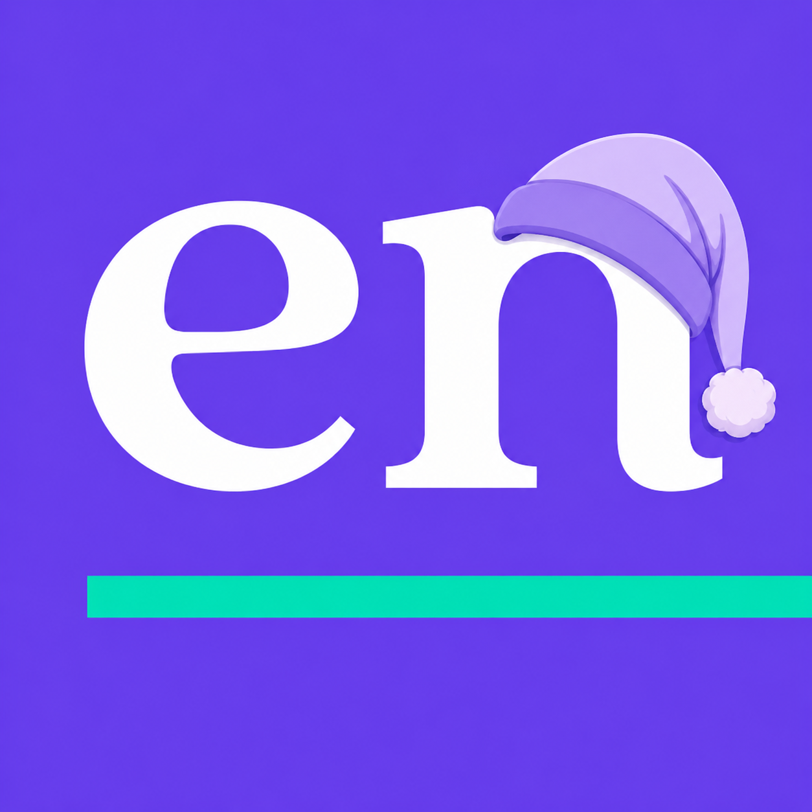

A gentle, hard-to-ignore — but never trapping — full-screen nudge at the times you choose. Built for bedtime.
Download for macOSUniversal (Apple Silicon & Intel) · macOS 13+ · free & open source
Per-day times, each with its own message, colors, and dismissal.
Esc always dismisses. Cmd-Tab and force-quit never blocked.
Skips times missed while your Mac slept — never replays them.
No network, no telemetry, no accounts. Your schedules stay on your Mac.
.dmg above..dmg and drag GoToBed into Applications, replacing the old copy.